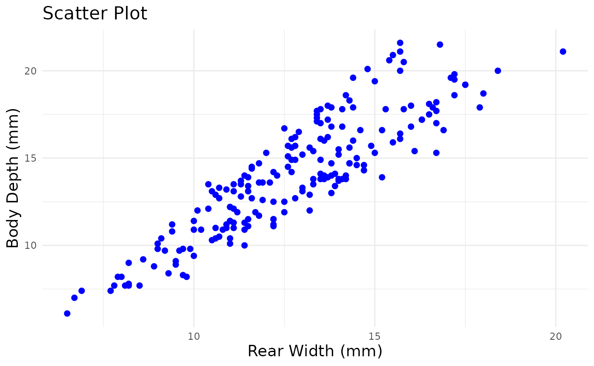
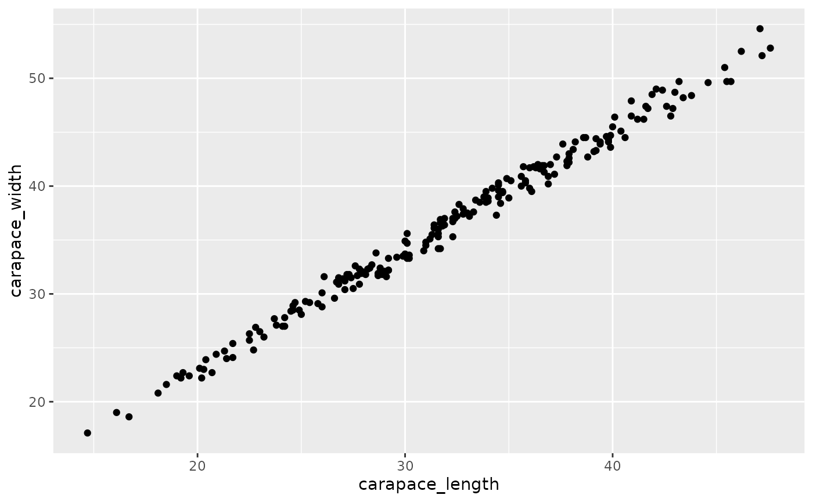
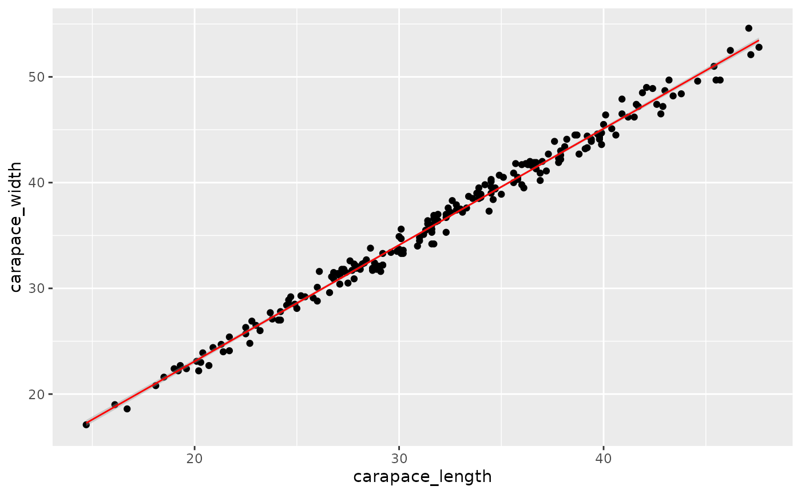

CrabTutorial.rmdYou might already have an idea on what this R package does from the introduction section. So, lets dive into the package by first downloading and installing the dataset:
#install.packages("googlesheets4")
library(googlesheets4)
googlesheets4::gs4_deauth()
crabs <- read_sheet("https://docs.google.com/spreadsheets/d/1GEqctG851sN14dEpYCiwgNUoNv1K5J0ApLdDdpD6Voo/edit?usp=sharing")## ✔ Reading from "crabs (1)".## ✔ Range 'crabs (1)'.
surveys <- read_sheet("https://docs.google.com/spreadsheets/d/17niWm4AXy6hueOz4poQ5teZHdm-8-Ms3z2K_sMOLKwM/edit?usp=sharing")## ✔ Reading from Surveys Data.## ✔ Range surveys.This package depends on some other R packages, so make sure they are installed and loaded into the library.
## ── Attaching core tidyverse packages ──────────────────────── tidyverse 2.0.0 ──
## ✔ dplyr 1.1.3 ✔ readr 2.1.4
## ✔ forcats 1.0.0 ✔ stringr 1.5.0
## ✔ ggplot2 3.4.4 ✔ tibble 3.2.1
## ✔ lubridate 1.9.3 ✔ tidyr 1.3.0
## ✔ purrr 1.0.2
## ── Conflicts ────────────────────────────────────────── tidyverse_conflicts() ──
## ✖ dplyr::filter() masks stats::filter()
## ✖ dplyr::lag() masks stats::lag()
## ℹ Use the conflicted package (<http://conflicted.r-lib.org/>) to force all conflicts to become errorsThis function allows us to remove any na values from the dataset that may give incorrect results.
remove_nas <- function(data, column_name) {
if (any(is.na(data[[column_name]]))) {
clean <- data %>%
na.omit() %>%
select(({{column_name}}))
return(clean)
} else {
meme()
}
}This function will remove all NAs from selected column in the data.
But first, we need to know how much rows of data there is to begin with. Lets try it with a random column from the data Surveys:
## [1] 99Now that we know there is 99 rows of data in this column, lets see if that number changes when we remove all the NAs.
clean_data <- remove_nas(surveys, "hindfoot_length")
nrows_clean <- length(clean_data[["hindfoot_length"]])
print(nrows_clean)## [1] 30After cleaning the data, we now know that there is 30 rows of data and we know that the function works!
You may notice that there is an if/else statement in this function, which is where my fun function comes in. If you selected a column where the data already doesn’t have any nas, then there is no need for this function. Thus, a meme shows up instead.
I am using the Crabs dataset now, because it doesn’t have any NAs.
Lets try it.
remove_nas(crabs, "rear_width")HAHA, thats it, thats my fun function.
This function allows us to remove, add or combine columns into one.
For this example, I will be using the Crabs dataset. To show the function working, I will be estimating the size or volume of the crabs using their carapace length, carapace width, and body depth. This is not an accurate measurement but it serves the functions purpose.
mutate_size <- function(data) {
result <- data %>%
mutate(estimated_size = carapace_length* carapace_width * body_depth) %>%
select(carapace_length, carapace_width, body_depth, estimated_size)
return(result)
}To view this new estimated size column with the three measurements, simply save the function as a variable and print the variable.
new_data <- mutate_size(crabs)
print(new_data)## # A tibble: 200 × 4
## carapace_length carapace_width body_depth estimated_size
## <dbl> <dbl> <dbl> <dbl>
## 1 16.1 19 7 2141.
## 2 18.1 20.8 7.4 2786.
## 3 19 22.4 7.7 3277.
## 4 20.1 23.1 8.2 3807.
## 5 20.3 23 8.2 3829.
## 6 23 26.5 9.8 5973.
## 7 23.8 27.1 9.8 6321.
## 8 24.5 28.4 10.4 7236.
## 9 24.2 27.8 9.7 6526.
## 10 25.2 29.3 10.3 7605.
## # ℹ 190 more rowsThis functions goes through the data and then uses the specified columns to create a scatter plot.
graph <- function(data, column, column_1) {
test <- data %>%
select({{column_1}})
if (sum(test) > 0){
plot <- ggplot(data, mapping = aes( data, x= {{column}}, y = {{column_1}})) +
geom_point(color= "blue" , size = 2) +
labs(title = "Scatter Plot", x = "Rear Width (mm)" , y = "Body Depth (mm)") +
theme_minimal() +
theme(
axis.title = element_text(size = 14),
plot.title = element_text(size = 16)
)
return(plot)
}
else {
meme()
}
}In this example, I will be using the Crabs dataset to make a scatter plot of rear width vs body depth.
graph(crabs, rear_width, body_depth)
Slay fr.
We’ll start with a basic regression to explore the connection between carapace length and carapace width. In this context, carapace length serves as the predictor (X) variable, and crapace width as the response (Y) variable.
Let’s first vizualize the data!
ggplot(crabs, aes(x= carapace_length, y= carapace_width)) + geom_point()
This relation looks linear and strongly positively related!
Now, lets perform the regression.
lm_function <- function(df,dependent,independent_cols) {
df %>%
select(a = quo_name(dependent), starts_with(independent_cols)) %>%
lm(a ~ ., data= .) %>%
summary()
}
lm_function(crabs, "carapace_length", "carapace_width")##
## Call:
## lm(formula = a ~ ., data = .)
##
## Residuals:
## Min 1Q Median 3Q Max
## -1.6732 -0.4943 -0.1069 0.5915 1.6396
##
## Coefficients:
## Estimate Std. Error t value Pr(>|t|)
## (Intercept) -0.661948 0.238574 -2.775 0.00606 **
## carapace_width 0.899846 0.006404 140.504 < 2e-16 ***
## ---
## Signif. codes: 0 '***' 0.001 '**' 0.01 '*' 0.05 '.' 0.1 ' ' 1
##
## Residual standard error: 0.7112 on 198 degrees of freedom
## Multiple R-squared: 0.9901, Adjusted R-squared: 0.99
## F-statistic: 1.974e+04 on 1 and 198 DF, p-value: < 2.2e-16Nice! This output is telling us a couple of very important information:
ggplot(crabs, aes(x= carapace_length, y = carapace_width)) + geom_point() + geom_smooth(method = "lm", color = "red", size = 0.5) ## Warning: Using `size` aesthetic for lines was deprecated in ggplot2 3.4.0.
## ℹ Please use `linewidth` instead.
## This warning is displayed once every 8 hours.
## Call `lifecycle::last_lifecycle_warnings()` to see where this warning was
## generated.## `geom_smooth()` using formula = 'y ~ x'